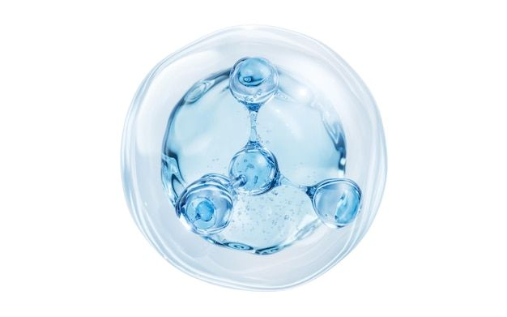
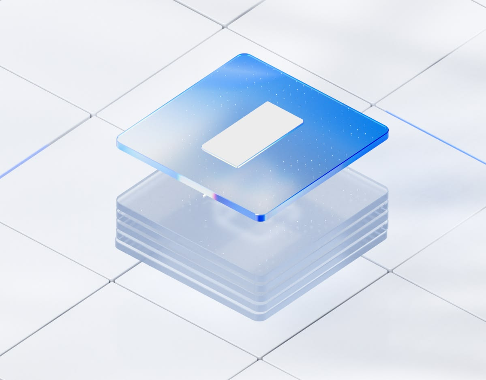

Исследования и разработки
Собственные разработки и создание эпоксидных систем в рамках строгих научных исследований, подтверждённые результатами испытаний согласно ГОСТ и химии полимеров.
 RU
+7 (963) 655-37-80
RU
+7 (963) 655-37-80
ООО «Оптимальные технологические решения»
Разрабатываем индивидуальные эпоксидные системы для гражданского строительства, промышленности, аэрокосмической отрасли и потребительских товаров — от экспертной консультации и расчёта до подбора материалов и запуска в производство.
Компаунды, отвердители, эпоксидные смолы.
О компании
Компания ОТР (Россия) эксклюзивно представляет в России компаунды производства ATUL (Индия) — мирового лидера компаундов, отвердителей и эпоксидных смол.
Мировой лидер

Высокие диэлектрические и термические свойства — в отличие от китайских аналогов. Применяются в производстве:
Системы для внутреннего и наружного использования:
Список всех позиций с электрическими, термическими, физико-химическими и другими свойствами представлен в каталоге.
Сферы деятельности
От концепции до производства — OTS предлагает полный спектр услуг в области разработки, производства и композитного материаловедения.
Собственные разработки и создание эпоксидных систем в рамках строгих научных исследований, подтверждённые результатами испытаний согласно ГОСТ и химии полимеров.
Производство эпоксидных систем по ТУ или спецификациям, оптимизированных под конкретные требования заказчика, ГОСТ и химические требования.
Комплексные проектные услуги, включая анализ материалов, расчёт состава и оптимизацию рецептур для конкретных применений.
Экспертное руководство по подбору материалов, обеспечивающее соответствие требованиям системы для конкретного применения и условиям эксплуатации.
Собственные лабораторные мощности для быстрого прототипирования, испытаний и валидации характеристик в реальных условиях.
Постоянная техническая поддержка на протяжении всего жизненного цикла продукта, от внедрения до оптимизации.
Отрасли применения
OTS разрабатывает решения для множества секторов — от укрепления зданий до высокоэффективного спортивного оборудования.

Специальные свойстваДиэлектрические свойства
Составы для заливки компонентов, герметизации, защитных покрытий плат и корпусов, где важны диэлектрические характеристики и термостабильность материала.
Каталог
Компаунды, эпоксидные смолы и отвердители OTS — технические характеристики систем в одном файле. Полный каталог доступен для скачивания.
Готовые системы из смолы, отвердителя и добавок: заливка и герметизация распределительных устройств, трансформаторов, электронных компонентов, адгезивы и клеи. Ниже — все системы с ключевыми характеристиками.
| Система | Состав, вес. ч. | Вязкость смеси, мПа·с | Tg, °C | Теплопроводность, Вт/м·К | Класс | КЛТР, (°C)−1 | Сферы использования |
|---|---|---|---|---|---|---|---|
| ARC-15 + AH-122 | Смола: 100 Отвердитель: 100 | 40 000 (25°C) 10 500 (40°C) 2 000 (60°C) | 110–120 | 0.65–0.75 | H | 27–30 | Распределительные устройства, Изоляторы, Проходные изоляторы (вводы) |
| ARC-16 + AH-118 + ADP-11 + Кварцевый наполнитель | Смола: 100 Отвердитель: 80 Флексибилайзер (пластификатор): 0–8 Наполнитель: 320–350 | 5 500 (40°C) 3 000 (60°C) 1 500 (80°C) | 105–115 | 0.85–0.95 | F | 31–36 | Распределительные устройства, Изоляторы, Проходные изоляторы (вводы), Измерительные трансформаторы, Сухие трансформаторы |
| ARCH-11 + K-3 + K-13 + Кварцевый наполнитель | Смола: 100 Отвердитель: 90 Ускоритель: 0.5–2.0 Наполнитель: 300 | 10 000–15 000 (40°C) 3 000–5 000 (60°C) 1 000–1 500 (80°C) | 100–110 | 0.80–0.90 | F | 39–41 | Распределительные устройства, Изоляторы, Проходные изоляторы (вводы) |
| ARCH-11 + AH-214 + K-13 + Кварцевый наполнитель | Смола: 100 Отвердитель: 90 Ускоритель: 0.5–2.0 Наполнитель: 270–300 | 1 000 (80°C) | 100–110 | 0.80–0.90 | F | — | Распределительные устройства, Изоляторы, Проходные изоляторы (вводы), Измерительные трансформаторы |
| ARCH-11 + AH-215 + Кварцевый наполнитель | Смола: 100 Отвердитель: 90 Наполнитель: 270 | 1 000 (80°C) | 100–110 | 0.80–0.90 | F | — | Распределительные устройства, Изоляторы, Проходные изоляторы (вводы), Измерительные трансформаторы |
| ARCH-12 + AH-214 + K-13 + Кварцевый наполнитель | Смола: 100 Отвердитель: 80 Ускоритель: 0.5–2.0 Наполнитель: 270 | 6400 (25°C) 3000 (40°C) 700 (60°C) | 75–85 | — | F | — | Распределительные устройства, Изоляторы, Проходные изоляторы (вводы) |
| ARCH-12 + AH-215 + Кварцевый наполнитель | Смола: 100 Отвердитель: 80 Наполнитель: 270 | 6 400 (25°C) 3 000 (40°C) 700 (60°C) | 75–85 | — | F | — | Распределительные устройства, Изоляторы, Проходные изоляторы (вводы) |
| ARCH-13 + AH-215 + Кварцевый наполнитель | Смола: 100 Отвердитель: 70 Наполнитель: 270 | 1 600–2 200 (80°C) | 100–110 | — | F | — | Распределительные устройства, Изоляторы, Проходные изоляторы (вводы) |
| C-17 + K-12 + K-13 + K-14 + Кварцевый наполнитель | Смола: 100 Отвердитель: 100 Ускоритель: 0.5–1.5 Флексибилайзер (пластификатор): 0–20 Наполнитель: 400 | 41 500 (40°C) 1 500 (80°C) | 85–95 | 0.80–0.90 | F | 31–36 | Изоляторы, Проходные изоляторы (вводы), Распределительные устройства, Измерительные трансформаторы, Сухие трансформаторы |
| C-50 + K-61 + Кварцевый наполнитель | Смола: 100 Отвердитель: 80 Наполнитель: 270 | 26 000 (40°C) 6 800 (60°C) 1 000 (80°C) | 105–125 | 0.80–0.90 | H | 35–37 | Распределительные устройства, Изоляторы, Проходные изоляторы (вводы) |
| C-50 + K-225 + Кварцевый наполнитель | Смола: 100 Отвердитель: 80 Наполнитель: 270 | 50 000 (40°C) 11 800 (60°C) 2 300 (80°C) | 90–105 | 0.80–0.90 | H | 36–40 | Распределительные устройства, Изоляторы, Проходные изоляторы (вводы) |
| C-51 + K-6 + Кварцевый наполнитель | Смола: 100 Отвердитель: 10 Наполнитель: 120 | 8 500 (25°C) | 60–70 | 0,54 | B | 60–65 | Адгезивы и клеи, Электрические сборки и узлы |
| ARC-18 + AH-123 | Смола: 100 Отвердитель: 25 | 2 500–3 500 (25°C) | 122–132 | 0,6 | F | 34–36 | Распределительные устройства, Изоляторы, Проходные изоляторы (вводы) |
| ARC-30 + AH-714 | Смола: 100 Отвердитель: 25 | 1 800 (27°C) | 60–70 | — | B | — | Измерительные трансформаторы, Электрические сборки и узлы |
| C-2 + K-1 + Кварцевый наполнитель | Смола: 100 Отвердитель: 30 Наполнитель: 200 | 4 000 (120°C) 2 500 (140°C) | 115–130 | — | F | — | Изоляторы, Проходные изоляторы (вводы), Измерительные трансформаторы |
| C-59 + K-1 + Кварцевый наполнитель | Смола: 100 Отвердитель: 30 Наполнитель: 200 | 1 900 (120°C) 790 (130°C) 500 (140°C) | 115–130 | 0.75–0.90 | F | 35–38 | Изоляторы, Проходные изоляторы (вводы), Распределительные устройства, Измерительные трансформаторы, Сухие трансформаторы |
| ARL-111 + AH-358 + ARS-101 | Смола: 100 Отвердитель: 15 | 1 300 (25°C) | 80–90 | — | F | — | Пропитка бумаги |
| C-1 + K-1 + Кварцевый наполнитель | Смола: 100 Отвердитель: 30 Наполнитель: 200 | 4 000 (120°C) 2 500 (140°C) | 115–130 | — | F | — | Измерительные трансформаторы, Распределительные устройства, Проходные изоляторы (вводы) |
| ARF-11 + K-918 + K-13 | Смола: 100 Отвердитель: 85 Ускоритель: 1–3 | 300–500 (25°C) | 115–130 | — | — | — | Электронные компоненты |
| L-12 + AH-113 + K-13 | Смола: 100 Отвердитель: 95 Ускоритель: 0.1–2.0 | 1 900–2 100 (25°C) | 165–185 | — | — | — | Электронные компоненты |
| L-12 + K-918 + K-13 | Смола: 100 Отвердитель: 85 Ускоритель: 0.1–2.0 | 600–900 (25°C) | 130–140 | — | — | — | Электронные компоненты |
| L-247 + K-918 + K-13 | Смола: 100 Отвердитель: 65 Ускоритель: 1–3 | - | 110–120 | — | — | — | Электронные компоненты |
| ARC-31 + AH-114 + AC-13 | Смола: 100 Отвердитель: 100 Ускоритель: 0.0–0.2 | 700–750 (23°C) | 90–100 | — | F | 31–36 | Сухие трансформаторы, Электрические сборки и узлы, Электродвигатели и генераторы |
| ARC-35 + AH-676 | Смола: 100 Отвердитель: 26 | 10 000–13 000 (25°C) | 70–80 | — | F | — | Электрические сборки и узлы |
| ARPN-36 + K-10 + K-86 + Растворитель | Смола: 100 Отвердитель: 40 Ускоритель: 1 Растворитель: 125 | - | — | — | — | — | Электронные компоненты |
| ARPN-36 + K-86 + Растворитель | Смола: 100 Отвердитель: 3-6 Растворитель: 80 | - | — | — | — | — | Электронные компоненты |
| G-11 + L-12 + K-10 + K-86 + Растворитель | Смола: 100 Отвердитель: 35 Ускоритель: 1–3 Растворитель: 100–150 | - | 150–160 | — | — | — | Электронные компоненты |
| G-10 + L-67 + K-66 + K-13 + Растворитель | Смола: 100 Отвердитель: 23 Ускоритель: 0.2 Растворитель: 10 | - | 130–140 | — | — | — | Электронные компоненты |
| FR-4 + L-68 + K-66 + K-13 + Растворитель | Смола: 100 Отвердитель: 32 Ускоритель: 1–3 | - | 130–140 | — | — | — | Электронные компоненты |
| A-31 + AH-717 | Смола: 100 Отвердитель: 80 | 25 000–40 000 | — | — | — | 50–60 | Адгезивы и клеи |
| A-35 + K-35 | Смола: 100 Отвердитель: 30 | 400–600 | — | — | — | 60 | Адгезивы и клеи |
| A-38 + K-99 | Смола: 100 Отвердитель: 40 | 60 000–90 000 | — | — | — | 65 | Адгезивы и клеи |
| C-51 + K-6 | Смола: 100 Отвердитель: 10 | - | 60–70 | 0.19–0.20 | — | 90–95 | Адгезивы и клеи |
Базовые смолы для компаундов, покрытий и адгезивов — от низковязких заливочных до специальных марок под задачу.
Каталог пополняется — данные скоро появятся
Отвердители и ускорители для разных режимов отверждения — от холодного до высокотемпературного.
Каталог пополняется — данные скоро появятся
Связаться с нами
Расскажите о вашем проекте — подберём или разработаем эпоксидную систему под ваши требования и подготовим расчёт.